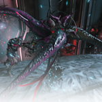

Do you like beating enemies into the ground? Do you like exclusive weapons? Do you like dealing way too much damage? If so, the Warrior Archetype is for you.
This is Nidus, the adaptive, the scourge. Nidus is a deadly plague for which there is no cure. You must control the strange disease.
- The Lotus
The Nidus Warframe uses the powers of the Infestation itself, created by his Orokin ancestors, to fight his enemies. Having no Shields by default, Nidus relies on Warrior-styled combat to keep enemies at bay. By using his first two Abilities, every hit on an enemy will grant Nidus his Passive Mutation Stacks, one stack per enemy hit, and up to a total of 100 stacks. These are used to cast his third and his Ultimate Abilities. If Nidus dies with 15 or more stacks, then 15 stacks will be consumed, reviving Nidus, making him invulnerable for 5 seconds, and restoring 50% of his max Health. On top of all that, just by Ranking up, Nidus gains up to 50% Armor, 13 Health regeneration and 15% Power Strength.
| Stat | Amount |
|---|---|
| Health | 150, 450 at Rank 30 |
| Shields | None, Nidus does not have Sheilds |
| Armor | 300, 450 at Rank 30 |
| Max Power/Energy | 100, 150 at Rank 30 |
| Ability | Description |
|---|---|
| Virulence |
Consumes 40 Energy. Nidus ruptures the ground up to 16 meters ahead of him, infecting it it fungal growth and stealing 10 Energy from each enemy hit. For every five enemies hit, the rupture grows in power. The rupture deals up to 200 damage on impact, and increases with the amount of Mutation Stacks Nidus has. |
| Larva | Consumes 25 Energy. Nidus launches an Infested pod to a selected location. It will quickly grow, and spawn tendrils that hook enemies within up to 12 meters of it. The pod will wither away after up to 7 seconds. |
| Parasitic Link |
Consumes 1 Mutation Stack. Binds to an ally within up to 40 meters, or an enemy within up to 20 meters, lasting for up to 60 seconds, or until the the target is too far away, whichever happens first. When bound to an ally, both Nidus and the target gain up to 25% Power Strength, making their Abilities do more damage. When bound to an enemy, up to 50% of damage taken by Nidus is done to the target instead. |
| Ravenous | Consumes 3 Mutation Stacks. Nidus creates an Infestation spawning ground with an 8 meter radius around himself, lasting up to 40 seconds. Nidus and his allies gain up to 20 increased Health regeneration when in this area. Maggots will spawn in this area, finding nearby enemies and dealing damage over time. Once the enemy dies, the spawning ground disappears, the maggot is killed, or the Virulence Ability hits an enemy being attacked by a maggot, it explodes, dealing up to 150 damage. |
List of all Warrior Warframes, in no particular order: